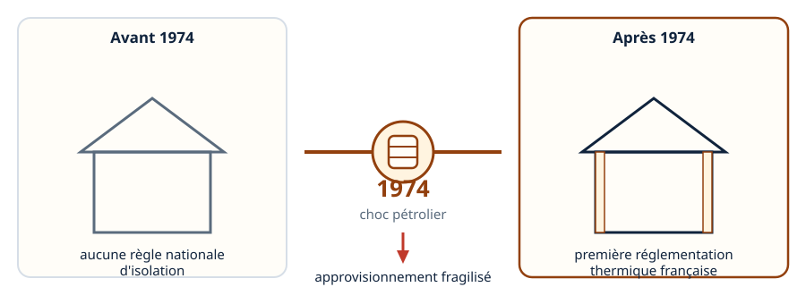
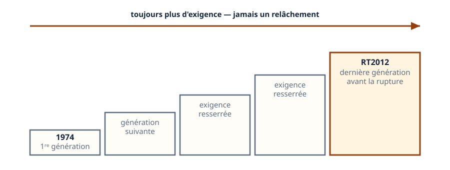
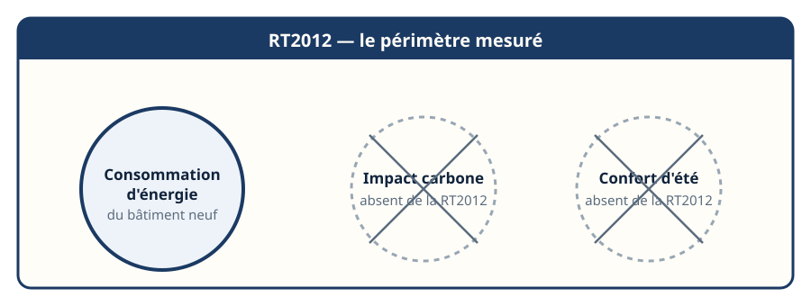
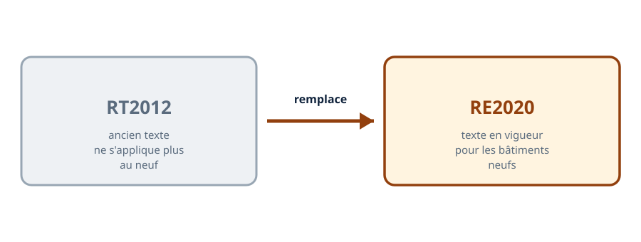
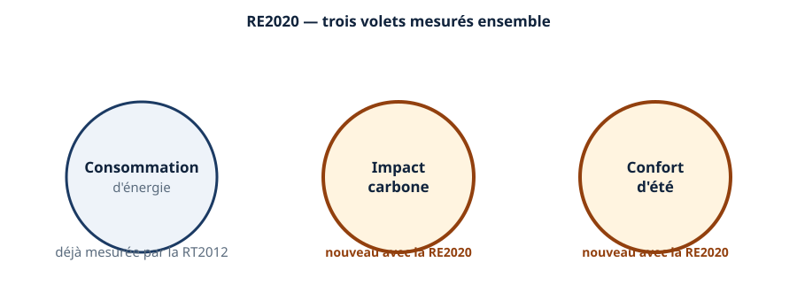
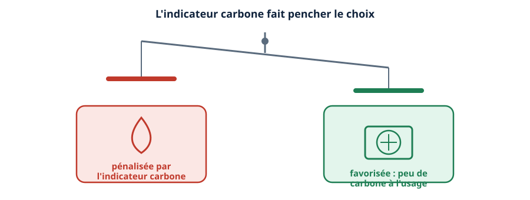
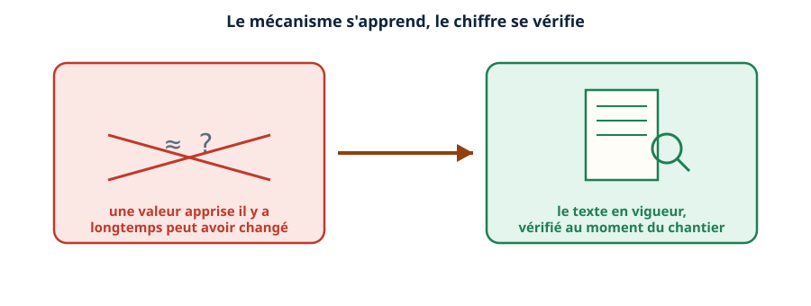
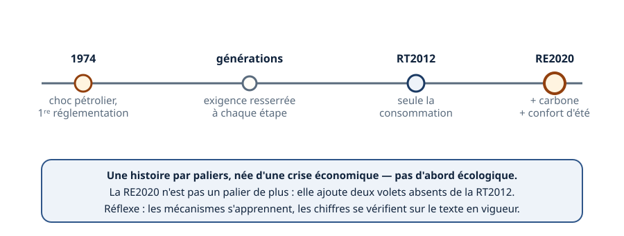

Thermique · niveau BTS
Pourquoi une RT ? — de 1974 à la RE2020
Mini-station commentée · 8 écrans et 4 questions · environ 10 minutes
À la fin de la station, vous savez pourquoi la réglementation thermique est née, comment elle s'est renforcée par étapes, ce que mesurait sa dernière génération avant la RE2020 — et ce que la RE2020 ajoute vraiment, plutôt qu'un simple durcissement de plus.
Chaque écran peut être expliqué à voix haute : le bouton « Écouter » commente ce que vous voyez. Rien n'est dit qui ne soit aussi écrit.
Écran 1 sur 8
Le choc pétrolier, point de départ
La réglementation thermique française n'est pas née d'abord d'une préoccupation écologique. Elle est née après le choc pétrolier de 1974, quand l'approvisionnement en énergie importée est devenu incertain et coûteux.
Avant cette date, aucune règle nationale n'imposait un niveau d'isolation aux bâtiments neufs. La première réglementation thermique répond à un problème d'indépendance énergétique, avant d'être un problème de climat.

Écran 2 sur 8
Une histoire par paliers
Depuis 1974, plusieurs textes se sont succédé, chacun resserrant l'exigence par rapport au précédent. Aucun retour en arrière : la marche est toujours montante.
La dernière génération avant la rupture qui nous intéresse ici s'appelle la RT2012. C'est elle qu'il faut regarder de près, parce que c'est elle que la RE2020 remplace.

Écran 3 sur 8
RT2012 : la dernière génération avant la rupture
La RT2012 mesurait la consommation d'énergie du bâtiment neuf. C'était déjà une approche globale et exigeante pour son époque.
Mais elle ne mesurait ni l'impact carbone des matériaux et de l'énergie, ni le confort d'été. Ces deux absences sont exactement ce que la RE2020 va combler.

Écran 4 sur 8
La RE2020 remplace la RT2012
Pour les bâtiments neufs, la RE2020 a remplacé la RT2012. Le texte de référence a changé — ce n'est plus la RT2012 qui s'applique à un dépôt de permis de construire aujourd'hui.
Retenez le mécanisme : un nouveau texte remplace l'ancien pour le neuf. La date exacte de bascule et les valeurs précises se vérifient sur le texte en vigueur au moment du dossier.

Écran 5 sur 8
Ce que la RE2020 ajoute vraiment
La RE2020 n'est pas qu'un durcissement de plus sur la consommation d'énergie. Elle ajoute deux volets entiers que la RT2012 ne mesurait pas : l'impact carbone — celui des matériaux et de l'énergie sur tout le cycle de vie du bâtiment — et le confort d'été.
C'est ce qui fait de la RE2020 une rupture, pas seulement un palier de plus dans l'escalier de l'écran 2.

Écran 6 sur 8
Pourquoi ça pousse vers la pompe à chaleur
Le nouvel indicateur carbone compte l'impact des matériaux et de l'énergie sur tout le cycle de vie. Une énergie carbonée pèse plus lourd dans ce calcul qu'une solution qui émet peu de carbone à l'usage.
Résultat direct pour le métier : la RE2020 pénalise les énergies carbonées et favorise la pompe à chaleur. C'est un mécanisme de calcul, pas une interdiction — mais il fait clairement pencher le choix.

Écran 7 sur 8
Le réflexe : vérifier le texte en vigueur
Les seuils réglementaires de la thermique du bâtiment changent souvent, par décret ou par arrêté. Une valeur apprise en formation peut ne plus être la bonne quelques années plus tard.
Le réflexe professionnel : retenir le mécanisme — ce que mesure le texte, ce qu'il compare, ce qu'il pénalise — et vérifier la valeur exacte sur le texte en vigueur au moment du chantier.

Écran 8 sur 8
Bilan et le réflexe
- La réglementation thermique est née d'une crise économique, le choc pétrolier de 1974 — pas d'abord d'une préoccupation écologique.
- Elle s'est renforcée par paliers, jusqu'à la RT2012, qui ne mesurait que la consommation d'énergie.
- La RE2020 remplace la RT2012 pour le neuf, et ajoute deux volets entiers : le carbone et le confort d'été.
- L'indicateur carbone pénalise les énergies carbonées et favorise la pompe à chaleur.
Le réflexe : le mécanisme s'apprend, le chiffre se vérifie sur le texte en vigueur.

Question 1 sur 4
Qu'est-ce qui a déclenché la première réglementation thermique ?
Question 2 sur 4
Que mesurait la RT2012 ?
Question 3 sur 4
Qu'est-ce que la RE2020 ajoute par rapport à la RT2012 ?
Question 4 sur 4